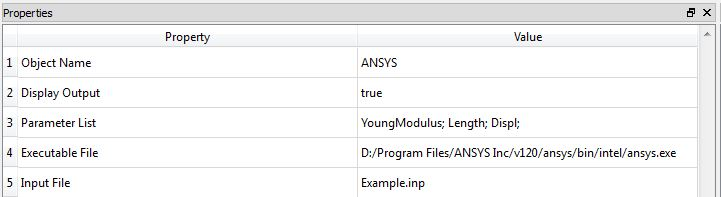
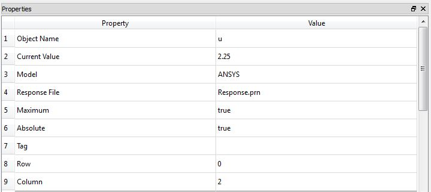
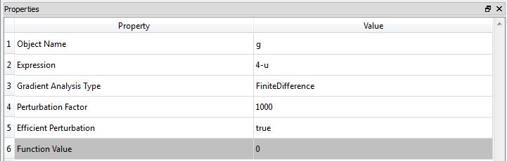

ANSYS Model
Class Name
Location in Objects Pane
- Models > Model > External Software > ANSYS
Model Description
Model Form
- This is an interface to the ANSYS mechanical simulation software.
DDM sensitivities
Properties
Object Name
- Name of the object in Rt
- Allowable characters are upper-case and lower-case letters, numbers, and underscore (“_”).
- The name is unique and case-sensitive.
Display Output
- Indicates whether the model is allowed to print messages in the Output Pane.
Parameter List
- List of the parameters that should be mapped into the ANSYS model.
Executable List
- Absolute or relative path to the location of the ANSYS input file, for example:
C:/Example.inp
- In this file, replace numbers with the name of the corresponding parameters in Rt
Output
- This model does not automatically create any response objects.
- Rather, create File Response objects.
- In those objects, specify the name of the ANSYS and the name of the file where ANSYS puts the response.
Right-click Menu
Remove
Example

- To etablish a functioning connection between ANSYS and Rtx and use its results in Rt, the following procedure could be followed:
- It is recommended that the output files of ANSYS are saved in the same directory as Rt's executive file.
- Properties of the ANSYS object has to be filled as it has been described above.
- List of random variables also ha to be defined. Note that these variables have to have a consistent naming as the ones in the ANSYS object
- To extract the results and use them in Rtx analyses, one can create a File Response like this:

- Please note that assigning 0 and 2 to Row and Column properties respectively, makes Rtx to search all rows of second column for data. For more information you can check File Response.
- Finally, a proper Limit State Function should be defined to evaluate failure probability and reliability index, using ANSYS results:

- Before running the analyses, it is recommended to check whether Rtx and ANSYS are well-connected, using Function Evaluation Analyzer.